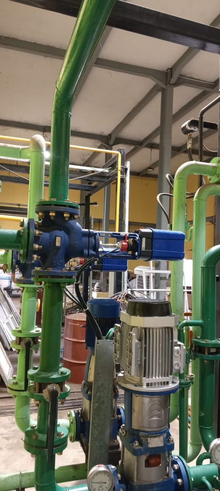
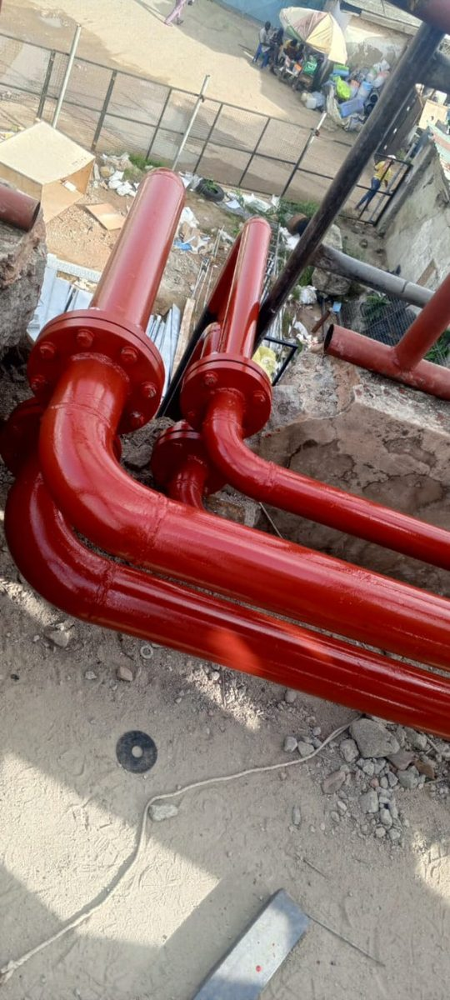
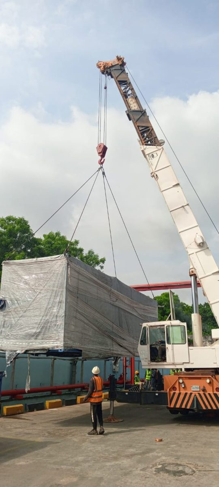
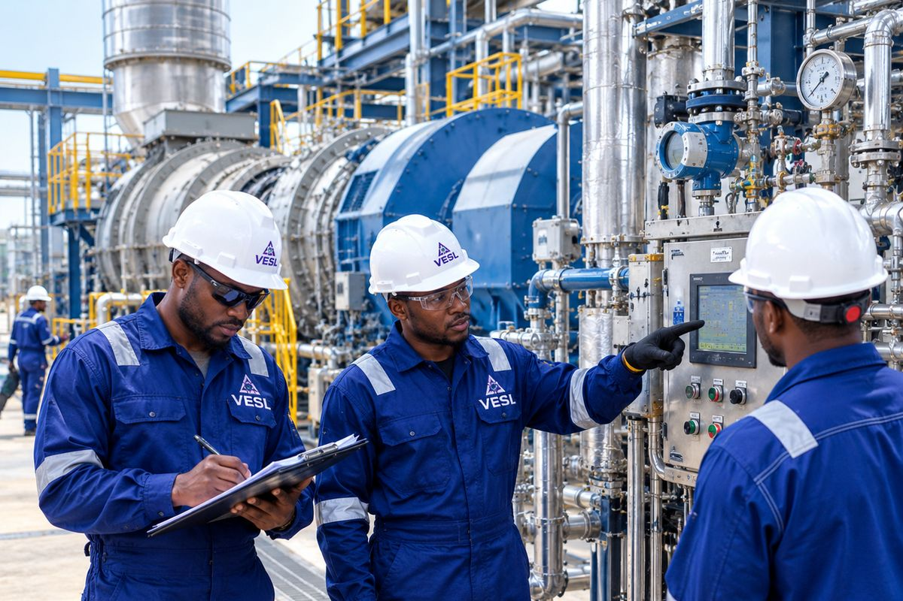
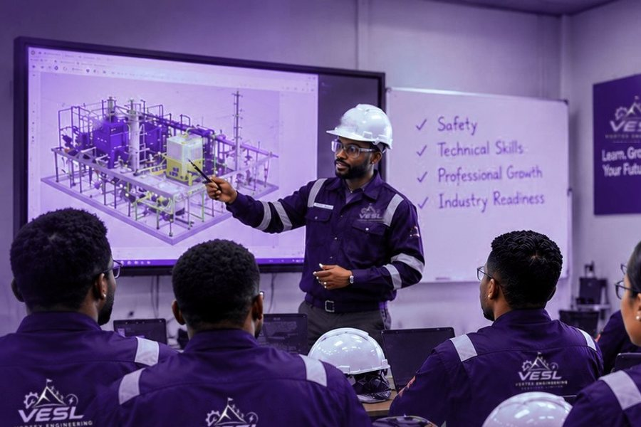

Home / Services
Services across the project lifecycle
Engineering and electrical works, start-up, performance testing and handover, and technical and vocational training.
Our services support projects across the engineering lifecycle, from planning and installation to testing, commissioning, maintenance and workforce development. Final scope is defined by the client's requirements, site conditions, contract and applicable regulations.
3 Way Valve Installation HT Line
Professional installation of three-way valves on high-temperature (HT) lines, supporting controlled routing and regulation of process flow within industrial piping systems.
The work may include reviewing approved piping and equipment drawings, confirming valve orientation and flow direction, preparing connection points, positioning and installing the valve, checking associated fittings and supports, and carrying out applicable inspection and leak or pressure testing in line with the approved project procedure. Correct installation helps the system achieve its intended flow-control arrangement and supports safe, maintainable operation. Final configuration and testing must follow the actual system design, valve manufacturer's instructions and approved project specifications.
Discuss this work
Exhaust Line Insulation Work
Exhaust line insulation work involves applying suitable thermal insulation and protective cladding to exhaust ducting and associated components, in accordance with the equipment operating conditions and approved project specifications.
Properly installed insulation helps reduce unwanted heat transfer, protect personnel from hot surfaces, support temperature management and protect surrounding equipment and structures from excessive heat exposure. The work may include surface and access preparation, insulation material fitting, securing, joint treatment and external cladding, followed by visual inspection of coverage, fit and finish. Material selection and installation details must be confirmed against the actual exhaust temperature, design and project requirements.
Discuss this work
Priming of Gas GENSET HT & LT Line
Preparation and priming activities associated with the high-temperature (HT) and low-temperature (LT) lines serving a gas generator set (GENSET), as applicable to the installed system.
The work may include checking line identification and routing, confirming connections and valve positions, preparing the relevant circuits, carrying out the specified priming or filling procedure, checking for visible leakage and verifying readiness for subsequent inspection, testing or commissioning. HT and LT circuits perform different thermal-management duties and must be treated according to the actual genset design, manufacturer guidance and approved procedure.
Discuss this work
View of Gas Genset Auxilliaries Installation
Installation and integration of auxiliary systems associated with gas generator sets.
Depending on the actual genset configuration, auxiliary systems can include supporting pipework, pumps, valves, cooling and lubrication-related equipment, fuel-system interfaces and other equipment required for generator operation. The service involves installation coordination, checking equipment and pipework connections, verifying supports and routing, inspecting interfaces and preparing the relevant systems for functional checks and commissioning. Properly installed auxiliaries help support dependable operation, maintainability and effective servicing of the gas genset.
Discuss this work
Offloading Activities
Industrial equipment offloading services involving the controlled unloading and handling of machinery, packaged equipment and project materials at site.
Activities may include offloading preparation, coordination of lifting personnel, review of the load and lifting arrangement, use of suitable lifting accessories, controlled crane-assisted lifting, movement and placement at the designated location, and coordination with site personnel. Safe offloading depends on verified load information, suitable lifting equipment, competent personnel, an appropriate lifting plan, exclusion zones and site-specific safety controls. All lifting operations must follow the approved lifting plan and applicable site procedures.
Discuss this work
Gas GENSET Control Panel I/O Card Termination
Gas GENSET control panel I/O card termination services covering the connection and organisation of control and signal wiring at the appropriate input/output modules.
The work may include identifying cables and cores, checking terminal schedules and approved drawings, preparing and terminating conductors, applying cable and core labels, and confirming that connections correspond with the intended digital or analogue input/output points. Where included in the approved scope, inspection, continuity checks, point-to-point verification and functional checks help confirm wiring integrity and correct signal routing. Accurate I/O termination supports dependable monitoring, control, alarm and interface functions for the gas generator system. All terminations and checks must follow approved drawings, panel documentation and manufacturer instructions.
Discuss this work
Cable Tray Fabrication
Professional cable tray fabrication and installation services designed to provide safe, organised and reliable cable-routing infrastructure for industrial facilities.
Work may cover cable tray measurement, cutting, bending, shaping, fabrication, support arrangement and installation to suit specific project requirements. Properly aligned cable tray systems support effective cable management, improve accessibility for inspection and maintenance, and promote neat, structured routing of electrical and instrumentation cables. Workmanship, structural support, installation accuracy and conformity with approved engineering drawings and project specifications are prioritised.
Discuss this work
Control Cable Laying
Control Cable Laying services cover the organised routing, installation and preparation of control cables for industrial electrical, instrumentation and generator systems.
Work may include cable-route preparation, laying through designated trays and support systems, cable identification, segregation, dressing and securing to maintain neat, accessible and properly organised installations. The work focuses on protecting cable integrity, maintaining appropriate separation, supporting efficient troubleshooting and preparing cables for accurate termination and system integration. Activities should follow approved engineering drawings, project specifications and applicable installation requirements.
Discuss this work
Start-up, Performance Testing & Handover
We support the transition from completed installation and commissioning activities to operational readiness and formal handover.
Plan start-up support
Scope may include
- Start-up planning and coordination
- Readiness reviews
- System-by-system completion checks
- Performance-test support according to approved criteria
- Punch-list tracking
- Operating and maintenance document collation
- Test reports, completion dossiers and handover records
Technical & Vocational Training
Our practical training programmes are designed to bridge academic knowledge and industry requirements, strengthening technical skills and work readiness.
Enquire about training
Scope may include
- Electrical installation and testing fundamentals
- Mechanical maintenance fundamentals
- Piping and valve awareness
- Basic instrumentation and loop-check principles
- Commissioning documentation
- Permit-to-work and hazard awareness
- Tool and equipment safety
- Technical reporting and job-readiness skills
Training is delivered where facilities and qualified trainers are available.
Planning an installation, commissioning, maintenance or technical training project?
Talk to Vertex Engineering Services Limited about your scope, schedule and technical requirements.